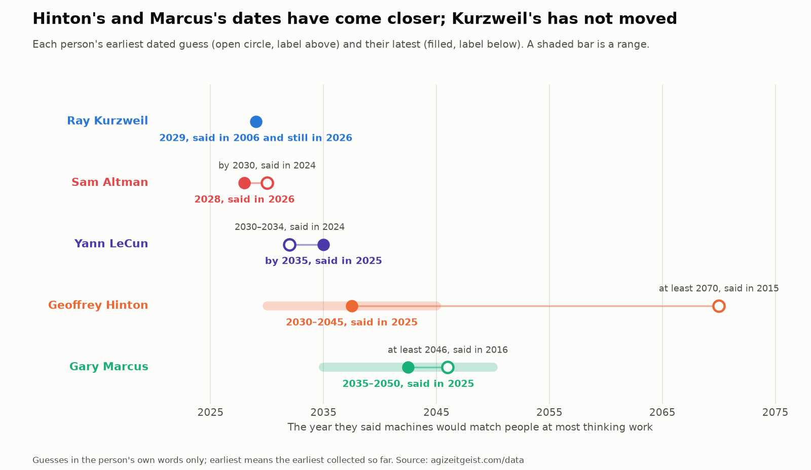
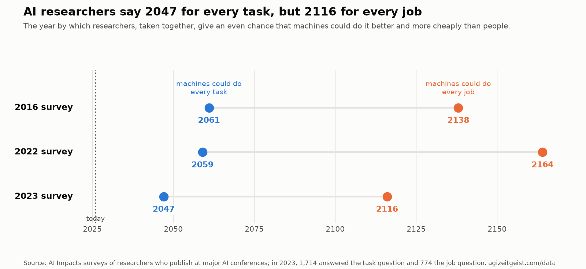
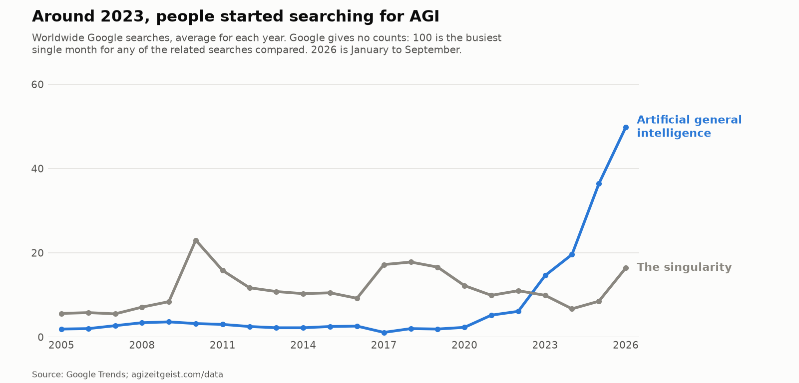
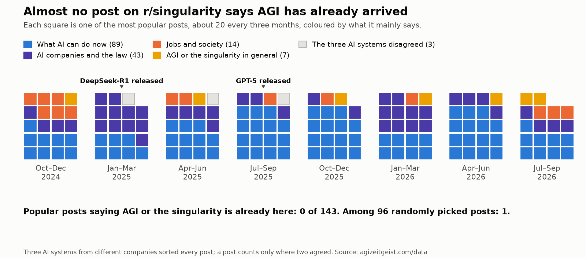

Are we in the singularity?
32%
of the way, averaged over the 3 parts that can be measured (forecasts unmeasured); all four must cross, and the slowest, the economy, is at 0%
Not yet. Four things would all have to be true, and stay true for a year. Today none of them is.
The singularity is the idea that machines will one day get smarter so fast that the world changes faster than anyone can keep up with. The step before it is artificial general intelligence, or AGI: a machine that can do most of the thinking work a person can. This site checks whether the singularity has started, and records when people expect AGI.
The four pillars of the singularity
Each bar shows how far that measure has come since 2019 toward the line where it would count.
Scored 17 October 2026 from public numbers. Track the changes here.
The current zeitgeist
"Zeitgeist" is a German word for the mood of a time: what people are saying and what they expect. This part of the site records what well-known experts, surveys of researchers, opinion polls, betting markets and online forums have said since 2005 about AGI. Every quote carries its date and a link to where it was said.
Has the argument moved: from whether such a machine can be built, to when it will arrive, to whether today's machines are nearly there? Four things stand out so far.
First, the doubters have moved. Geoffrey Hinton, a computer scientist whose work underlies today's AI, said "no sooner than 2070" in 2015 and "between five and 20 years" in 2025. Gary Marcus, a psychologist and the best-known critic of today's AI, said "at least thirty or fifty years" in 2016 and "10-25 years" in 2025. Ray Kurzweil has said 2029 the whole time. This is where the "about 2030" at the top of the page comes from.


Second, AI researchers have moved too, more slowly, and how far depends on the question. In the largest repeated survey of researchers, the year they give an even chance that machines could do every task better and more cheaply than people came 14 years closer between 2016 and 2023, to 2047. Asked when machines could do every job that way, they say 2116.


Third, ordinary people have started paying attention. Google searches for artificial general intelligence were flat for fifteen years and have climbed steeply since 2023, and in polls since 2023 about half of American adults say they are more concerned than excited about the growing use of AI in daily life.


Fourth, almost no one says the machine has arrived, not even on r/singularity, a forum on the website Reddit for people who expect it.


So far this rests on five well-known people (Ray Kurzweil, Geoffrey Hinton, Yann LeCun, Gary Marcus and Sam Altman), three surveys of AI researchers, opinion polls, betting markets and one online forum. More people and sources are being added.
Expecting it soon is not the same as it happening. Whether the singularity has actually begun is the test below.
Are we in the singularity?
The number at the top of the page is the average, across the parts that can be measured, of how far each is from its starting point toward its line, and the words beneath it give each part's share and when each would cross on its current trend; the test's own single progress number is stricter, the weakest part's share, today at most 0% (the economy). The answer itself comes from a test with four parts. The singularity has been described in three classic ways: machines getting better faster and faster, machines doing the work of making machines better, and change so fast that nobody can predict what comes next. Each alone gives false alarms. A fast decade in any industry looks like the first; a company's claim that its AI does its own research cannot be checked from outside; and every new technology makes old forecasts look foolish, the internet included. So the test asks for all three at once, plus a fourth that people outside the AI world measure: whether the world's economy has changed gear. Each part has a line where it would count, fixed before anyone looked at the numbers. The full rules are in a working document.
A. Is AI getting better faster and faster?
The idea, from the inventor Ray Kurzweil: AI gets better faster and faster, so the time it takes to double is itself shrinking.
The measure is how long a job the best AI can finish on its own. METR, a research group that tests AI systems, gives each new system computer-programming jobs of known length, from seconds to days of a skilled person's time, and finds the longest it gets right half the time. Most tests of AI are maxed out within a year or two; this one keeps rising, which is why it was chosen. That length has been doubling every few months. Steady doubling is fast, but it is not a singularity: for this part to count, the doubling itself has to keep getting quicker, down to 30 days. Over the year to February 2026 it took 121 days; in 2019 it took 188. The rules also ask for it to have got quicker two readings in a row, which today it has not. Extending the trend gives a range, not a date: over all the twelve-month windows since 2024 the doubling time has fallen about 6 percent a year, which would reach 30 days in about 22 years; if it halved every year or two, as it did between 2024 and 2025, 2 to 4 years; and over the latest year it has not fallen at all.

Every system measured (26) and every twelve-month window
| came out | system | longest job it gets right half the time | likely range | best at the time | source | |
|---|---|---|---|---|---|---|
| 2019-02-14 | GPT-2 | 0.1 min | 0.0 to 0.1 min | yes | source | |
| 2020-05-28 | davinci-002 | 0.1 min | 0.1 to 0.2 min | yes | source | |
| 2022-03-15 | GPT-3.5 Turbo Instruct | 0.6 min | 0.3 to 1.1 min | yes | source | |
| 2023-03-14 | GPT-4 (0314) | 4.0 min | 1.9 to 8.0 min | yes | source | |
| 2023-11-06 | GPT-4 (1106) | 4.0 min | 1.9 to 8.4 min | yes | source | |
| 2024-03-04 | Claude 3 Opus | 4.0 min | 1.7 to 8.8 min | source | ||
| 2024-04-09 | GPT-4 Turbo | 3.7 min | 2.0 to 6.7 min | source | ||
| 2024-05-13 | GPT-4o | 7.0 min | 4.0 to 12.9 min | yes | source | |
| 2024-06-20 | Claude 3.5 Sonnet (June 2024) | 11.4 min | 5.5 to 22.4 min | yes | source | |
| 2024-09-12 | o1-preview | 20.3 min | 11.7 to 33.4 min | yes | source | |
| 2024-10-22 | Claude 3.5 Sonnet (October 2024) | 20.5 min | 10.1 to 40.8 min | yes | source | |
| 2024-12-05 | o1 | 38.8 min | 0.4 to 1.1 h | yes | source | |
| 2025-02-24 | Claude 3.7 Sonnet | 1.0 h | 0.6 to 1.7 h | yes | source | |
| 2025-04-16 | o3 | 2.0 h | 1.2 to 3.2 h | yes | source | |
| 2025-05-22 | Claude Opus 4 | 1.7 h | 1.0 to 2.7 h | source | ||
| 2025-08-05 | Claude Opus 4.1 | 1.7 h | 1.0 to 2.7 h | source | ||
| 2025-08-07 | GPT-5 | 3.4 h | 1.9 to 6.8 h | yes | source | |
| 2025-11-18 | Gemini 3 Pro | 3.7 h | 2.3 to 6.3 h | yes | source | |
| 2025-11-19 | GPT-5.1-Codex-Max | 3.7 h | 2.2 to 6.6 h | source | ||
| 2025-11-24 | Claude Opus 4.5 | 4.9 h | 2.7 to 10.4 h | yes | source | |
| 2025-12-11 | GPT-5.2 | 5.9 h | 3.3 to 13.6 h | yes | source | |
| 2026-02-05 | Claude Opus 4.6 | 12.0 h | 5.3 to 60.6 h | yes | source | |
| 2026-02-05 | GPT-5.3-Codex | 5.8 h | 3.2 to 13.6 h | source | ||
| 2026-02-19 | Gemini 3.1 Pro | 6.4 h | 3.9 to 11.6 h | source | ||
| 2026-03-05 | GPT-5.4 | 5.7 h | 3.1 to 12.8 h | source | ||
| 2026-04-07 | Claude Mythos (early preview) | 17.4 h | 8.5 to 55.1 h | yes | past 16 h | source |
| window ends | days to double | systems in the window | includes a reading past 16 hours |
|---|---|---|---|
| 2024-06-20 | 172 | 3 | |
| 2024-09-12 | 138 | 4 | |
| 2024-10-22 | 140 | 5 | |
| 2024-12-05 | 93 | 5 | |
| 2025-02-24 | 95 | 6 | |
| 2025-04-16 | 89 | 7 | |
| 2025-08-07 | 91 | 6 | |
| 2025-11-18 | 131 | 5 | |
| 2025-11-24 | 131 | 6 | |
| 2025-12-11 | 139 | 6 | |
| 2026-02-05 | 121 | 7 | |
| 2026-04-07 | 117 | 7 | yes |
B. Has AI become impossible to predict?
The idea, from the writer Vernor Vinge: past some point nobody can predict what comes next, and it can only be confirmed after the fact. A post on an online forum put it this way: "Any prediction made now about the next five years will look stupid in retrospect."
This part cannot be scored yet. Scoring it needs old predictions of the measure in part A set against what then happened, to see how far ahead forecasts still beat the simplest guess, that the trend carries on. Nobody has collected that record, and it can only be scored once the predicted dates have passed. The nearest evidence is the surveys of AI researchers in the section above. If their forecasts had been right, the year they expect would have stood still while time passed. Instead it jumped closer: between 2022 and 2023, about 15 years of expected waiting disappeared in 1.7 years. Forecasts that keep being wrong in the same direction, too slow, are what this part looks for, but surveys about a distant year are only a hint, not the score.
The surveys, the steps between them, and the betting odds for comparison
| survey | even-odds year | years away at the time | source |
|---|---|---|---|
| 2016-01-01 | 2061 | 45.0 | source |
| 2022-01-01 | 2060 | 38.0 | source |
| 2023-10-01 | 2047 | 23.3 | source |
| step | years of real time | change in years away | years closer per year, beyond the passage of time |
|---|---|---|---|
| 2016 to 2022-01-01 | 6.0 | -7.0 | +0.2 |
| 2022 to 2023-10-01 | 1.7 | -14.7 | +7.4 |
Betting odds on Manifold for "AGI created and publicly announced before 2030", for comparison only (a price people bet at, not a survey):
| date | odds | source |
|---|---|---|
| 2024-01-07 | 36% | source |
| 2024-12-07 | 47% | source |
| 2025-12-07 | 36% | source |
| 2026-09-30 | 53% | source |
| 2026-10-16 | 49% | source |
C. Is AI doing the work of improving AI?
The idea, from the mathematician I. J. Good: once machines do the work of making machines better, progress feeds on itself.
Nobody outside the AI companies can measure how much of the work of improving AI is now done by AI, so what exists is what the companies say about themselves. Anthropic, which makes the Claude AI systems, reports what share of its AI research work its own AI leads, as judged by that AI. That is the figure scored, and it would count at half. Google says about three-quarters of its new computer code is written by AI, but that covers all its code, not its research, so it is not scored. Anthropic also says its AI takes part in more than 90% of its research work, a lower bar than leading it. At the pace of its first 6 months (1% to 26%), the share would reach half in about 6 months if it rose steadily, and in about 1 month if it kept multiplying; two readings are a thin basis for either.

What the companies said
| date | what was measured | figure | source |
|---|---|---|---|
| 2026-02-01 | share of Anthropic's AI research and development work that Claude 'leads' (R&D Automation Index, prototype) | 1% (upper bound) | source |
| 2026-04-24 | share of Google's new code that is AI-generated and approved by engineers (company self-report) | 75% | source |
| 2026-08-01 | share of Anthropic's AI research and development work that Claude 'leads' (R&D Automation Index, prototype) | 26% | source |
| 2026-08-01 | share of Anthropic's AI research and development work at or above the level where Claude 'collaborates' (R&D Automation Index, prototype) | 90% (lower bound) | source |
| 2026-08-09 | share of the work of building an early-2026 frontier model that AI does today, median estimate of Anthropic staff (internal poll, self-report) | 51% | source |
D. Has the economy changed gear?
The idea, from the economist Robin Hanson: each new era of history has made the world's economy double about a hundred times faster than the one before.
The economist Robin Hanson looked at the whole history of the world's economy and found three eras: hunting, farming and industry. In each, the amount the world produces doubled about a hundred times faster than in the era before: every 230,000 years, then every 860 years, then every 15 years. A fourth era would double it in a few years or less. This part asks whether that has started, using the World Bank's yearly count of everything the world produces. In 2025 it grew 2.9 percent, a pace that doubles it every 24 years; since 1961 it has averaged 3.5 percent. The line, 30 percent in a year, would double it every 2.6 years. It comes from a 2021 report by Tom Davidson for the research funder Open Philanthropy, not from this project, and it is far above the best year since 1961, 6.6 percent. This is the one part measured by people outside the AI world, which is why it is in the test; the cost is that the economy reacts years after the technology, so it will usually be the furthest behind. Extending the trend gives no date: since 2010 growth has been flat to falling (-0.04 points a year), and the line is 5 times the best year on record.

Every year (65 readings)
| year | growth | years to double at that rate | source |
|---|---|---|---|
| 2025 | 2.92% | 24.1 | source |
| 2024 | 2.90% | 24.2 | source |
| 2023 | 2.86% | 24.6 | source |
| 2022 | 3.44% | 20.5 | source |
| 2021 | 6.49% | 11.0 | source |
| 2020 | -2.89% | none (output fell) | source |
| 2019 | 2.68% | 26.2 | source |
| 2018 | 3.29% | 21.4 | source |
| 2017 | 3.45% | 20.4 | source |
| 2016 | 2.79% | 25.2 | source |
| 2015 | 3.13% | 22.5 | source |
| 2014 | 3.17% | 22.2 | source |
| 2013 | 2.89% | 24.3 | source |
| 2012 | 2.75% | 25.6 | source |
| 2011 | 3.31% | 21.3 | source |
| 2010 | 4.52% | 15.7 | source |
| 2009 | -1.33% | none (output fell) | source |
| 2008 | 2.09% | 33.5 | source |
| 2007 | 4.43% | 16.0 | source |
| 2006 | 4.49% | 15.8 | source |
| 2005 | 4.06% | 17.4 | source |
| 2004 | 4.50% | 15.7 | source |
| 2003 | 3.07% | 22.9 | source |
| 2002 | 2.32% | 30.2 | source |
| 2001 | 2.03% | 34.5 | source |
| 2000 | 4.57% | 15.5 | source |
| 1999 | 3.58% | 19.7 | source |
| 1998 | 2.78% | 25.3 | source |
| 1997 | 4.00% | 17.7 | source |
| 1996 | 3.59% | 19.7 | source |
| 1995 | 3.18% | 22.1 | source |
| 1994 | 3.42% | 20.6 | source |
| 1993 | 1.86% | 37.6 | source |
| 1992 | 2.06% | 34.0 | source |
| 1991 | 1.23% | 56.7 | source |
| 1990 | 2.71% | 25.9 | source |
| 1989 | 3.64% | 19.4 | source |
| 1988 | 4.53% | 15.6 | source |
| 1987 | 3.75% | 18.8 | source |
| 1986 | 3.31% | 21.3 | source |
| 1985 | 3.66% | 19.3 | source |
| 1984 | 4.73% | 15.0 | source |
| 1983 | 2.58% | 27.2 | source |
| 1982 | 0.41% | 169.4 | source |
| 1981 | 1.89% | 37.0 | source |
| 1980 | 1.82% | 38.4 | source |
| 1979 | 4.14% | 17.1 | source |
| 1978 | 4.14% | 17.1 | source |
| 1977 | 3.94% | 17.9 | source |
| 1976 | 5.22% | 13.6 | source |
| 1975 | 0.81% | 85.9 | source |
| 1974 | 1.99% | 35.2 | source |
| 1973 | 6.46% | 11.1 | source |
| 1972 | 5.54% | 12.9 | source |
| 1971 | 4.11% | 17.2 | source |
| 1970 | 3.77% | 18.7 | source |
| 1969 | 5.96% | 12.0 | source |
| 1968 | 5.95% | 12.0 | source |
| 1967 | 3.74% | 18.9 | source |
| 1966 | 5.42% | 13.1 | source |
| 1965 | 5.63% | 12.7 | source |
| 1964 | 6.63% | 10.8 | source |
| 1963 | 5.02% | 14.2 | source |
| 1962 | 5.32% | 13.4 | source |
| 1961 | 3.91% | 18.1 | source |
Not finished yet
Three pieces the test needs before it is complete.
- A trial run on the past. Run on the years 1995 to 2019, the test must say "not yet". The internet boom should trip only part B, and the years when today's AI methods took off should trip only part A. The measures do not reach back that far yet, so this has not been done. The test was adopted without it. If the trial later trips on those years, the lines are wrong and will be changed, with the change written down.
- The record of old predictions, for part B. Predictions of the measure in part A, starting with the dates researchers gave in a 2016 survey, set against what then happened. Until it exists, part B cannot be scored.
- A second source for part C that is not a company talking about itself.
Method and data
Everything on this page is worked out from tables anyone can download, and every row in those tables links to where it came from. What people said and expected is kept in one set of tables, and what the world actually did (how good AI got, what the companies reported, how the economy grew) in another; the two are never mixed. Every search that was run to find a quote is written down, so that someone else can run it again. The working documents behind the site are published as they are written, in the project's own terms, for anyone checking the work: the method, the rules for sorting statements, the rules of the test, and every change, with its date and reason. This page is the plain account of the same material.
The searching and the sorting of statements were done by Claude, an AI model made by Anthropic, following those written rules; every rule, and every line of the test, was decided by John Fredrickson. The forum posts were sorted by three AI systems from three companies with no person checking them, and systems from different companies can still share blind spots.
Cite as: Fredrickson, J. (2026). AGI Zeitgeist Tracker [dataset]. Version of 2026-10-17 (04e0c8b). https://agizeitgeist.com. Data under CC BY 4.0; scripts under MIT. The charts are pictures; the table linked beside each one holds the numbers drawn. The test's lines were fixed on 8 October 2026; the record of that decision.